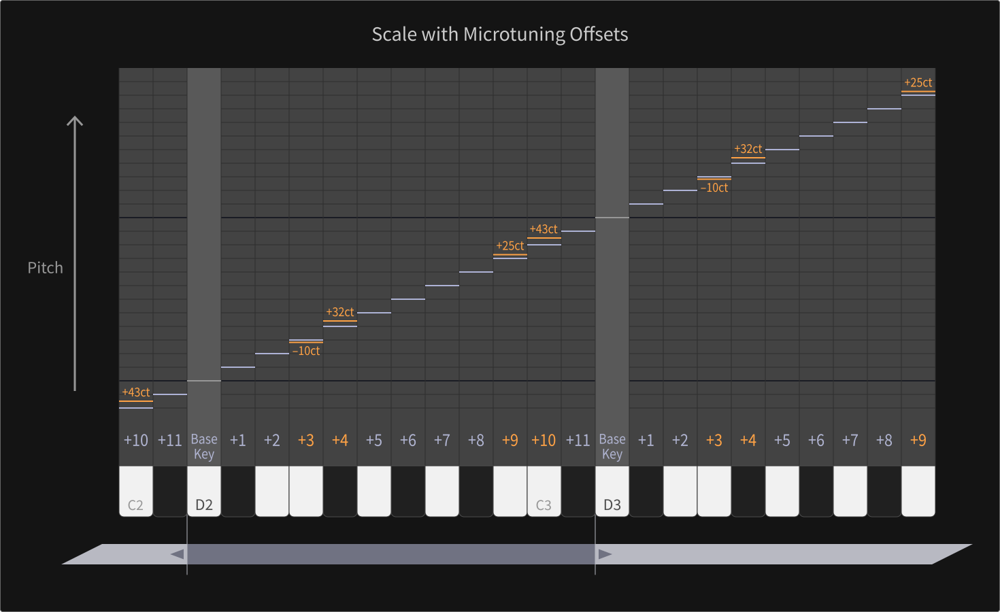
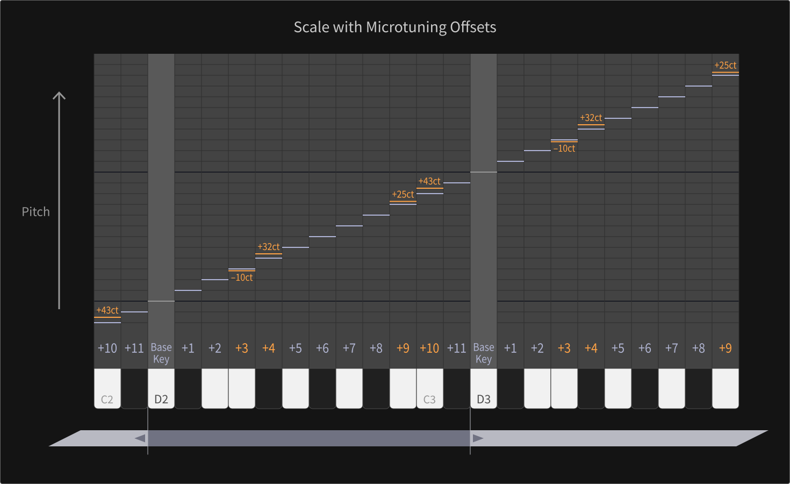

Post Processing and other Parameter Groups
Post ProcessingThe resulting signal (a mixture of the Output Mix and the Effects section) can be amplified or attenuated by a Master Level parameter, before it passes through a soft clipper, preventing the signal from being clipped at the D/A converter.
Other Parameter GroupsMaster
Besides the Master Level, the Master group also contains a Master Tune parameter which can shift the whole tuning of the instrument by up to 48 semitones in both directions.
Scale
The Scale group allows for redefining the scale of the instrument, which is the equal temperament by default. The Base Key of a scale can be defined and all remaining 11 keys can have an individual offset (up to 800.0 cents - eight semitones – in both directions) to the equal temperament. So a variety of different scales is achievable, including historical and traditional settings, pentatonic scalings or exotic and experimental types.
 

Unison
The Unison group provides additional control and allows for unison voices (more than one sounding voice per pressed key). The number of unison voices can be adjusted (one by default). Three spread parameters can determine, how each unison voice is spread against the others: Detune can spread the pitches, Phase can spread the oscillator start phases and Pan can spread the panning of individual unison voices.